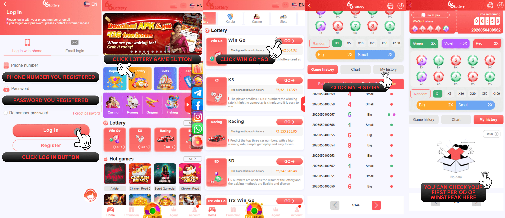
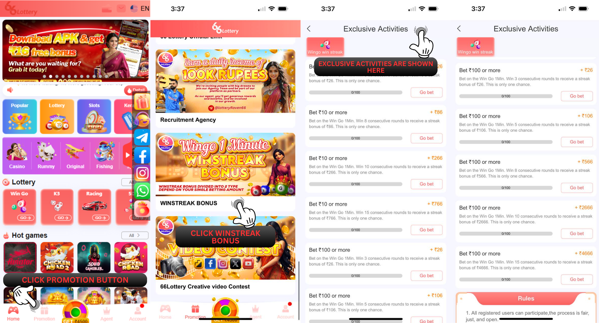
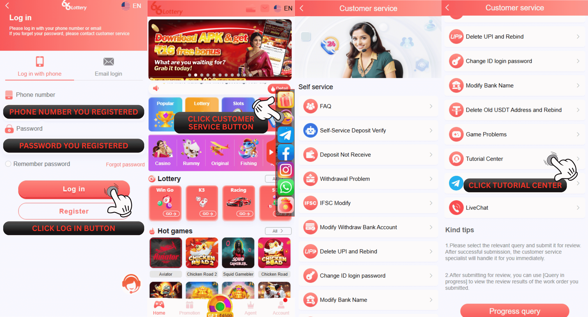

Winstreak Bonus
HOW TO CLAIM WINSTREAK ON SELF-SERVICE CENTER 66 Lottery
66 Lottery is offering a bonus called the win streak bonus. To qualify for this bonus, you must play on wingo for 1 minute, have a continuous win, and adhere to the betting amount on the bonus list. There will be two types of betting amounts: A is ₹100 or more and B is ₹10-99. You can claim this bonus one times per day, and the bonus will have a turnover of x1 from the bonus amount you receive. This bonus is valid only on the day of claim and will expire if not claimed by the deadline. You can claim this bonus by clicking on 【Exclusive Activities】on the 【Promotion】page.
Note : If you already reach claiming one time per day, you cannot claim more today and can be claim again tomorrow for next day betting order.

| Betting amount | Winning streak | Bonus |
|---|---|---|
| ₹10-₹99 | 5 | ₹26 |
| ₹10-₹99 | 8 | ₹86 |
| ₹10-₹99 | 10 | ₹266 |
| ₹10-₹99 | 15 | ₹766 |
| ₹100+ | 3 | ₹26 |
| ₹100+ | 5 | ₹106 |
| ₹100+ | 8 | ₹566 |
| ₹100+ | 10 | ₹2666 |
| ₹100+ | 15 | ₹4666 |
Q : How do I check my win streak?
A : You may check you have a winstreak in the game by following these instructions.
1.Enter Win Go 1 Minute.
2.Press My History and Details.
3.Check the initial and last period of your winning streak betting.
4.Take a screenshot of your winstreak history, beginning with the first and ending with the one you want to claim.
Reminder : You must copy period first winstreak correctly for avoid any problem on applying bonus
Reminder : You must copy period first winstreak correctly for avoid any problem on applying bonus

Q : How do I claim the winning streak bonus on 66lottery?
A : To claim the winning streak bonus, please visit this link: : https://www.66lottery.vip/ and then follow these steps:
1.Click Exclusive Activities.
2.Find the corresponding bonus based on your betting amount type (A/B) and the number of consecutive wins.
3.The system will automatically calculate your winning streak. Once you reach the required conditions, click the “Claim” button to claim it.
To claim your winning streak bonus faster, please stop betting immediately upon reaching the claim conditions and go to “Exclusive Activities” to claim your bonus. If your winning streak is interrupted due to continued betting, the system will recalculate your winnings.

Q : How can I check if my winning streak bonus has been successfully claimed on the 66 lottery platform?
A : You can check your winning streak bonus claim status in your 66 lottery transaction history using the following steps:
1.Visit the 66lottery platform : https://www.66lottery.vip/
2.Find the Account page and click My transaction history on the page.
3.After entering the transaction history, select Winning streak bonus
4.Click Confirm to view the claimed bonus.
You can also select a date to view more detailed bonus claim records! Many other bonus claim records can also be viewed.

Q : Sorry, after checking, I found that my last win in my winning streak was at 23:59. I applied too late after that. Can I still apply at the self-service center?
A : We apologize, but according to the winning streak rules, this promotion is only valid for the day it expires. It will restart after that. If you apply after 23:59, it will be considered expired and you will not be able to claim it.
Q : How many types of situations prevent me from claiming the 66 Lottery winning streak bonus?
A : Here are some types of situations where you cannot claim the 66 Lottery winning streak bonus:
1.Bets less than 10 rupees or minimum winning streak requirement not met: This rejection means your winning streak bet amount did not meet the minimum requirement, or the number of consecutive wins you achieved did not meet the minimum requirement. Please resubmit after meeting the requirements.
2.This period has already been successfully claimed: This rejection means the winning streak bonus for this period has already been claimed, and it can only be claimed once per period. If it has already been claimed, it cannot be claimed again.
3.If you do not see the options for claiming the corresponding winning streak and bonus: This means you have reached the maximum number of times you can claim your winning streak bonus. You can try claiming a new bonus tomorrow. However, please remember that you must claim the new bonus on the same day; you cannot claim it on other days.
